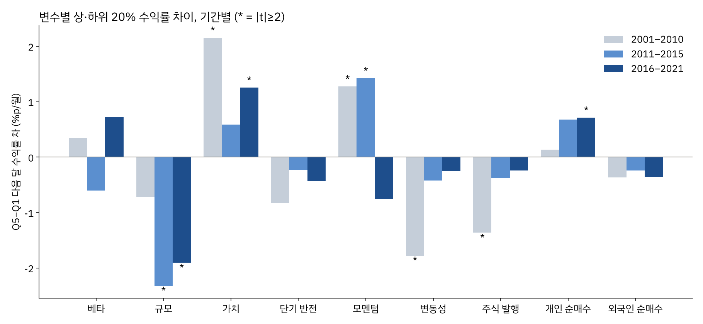
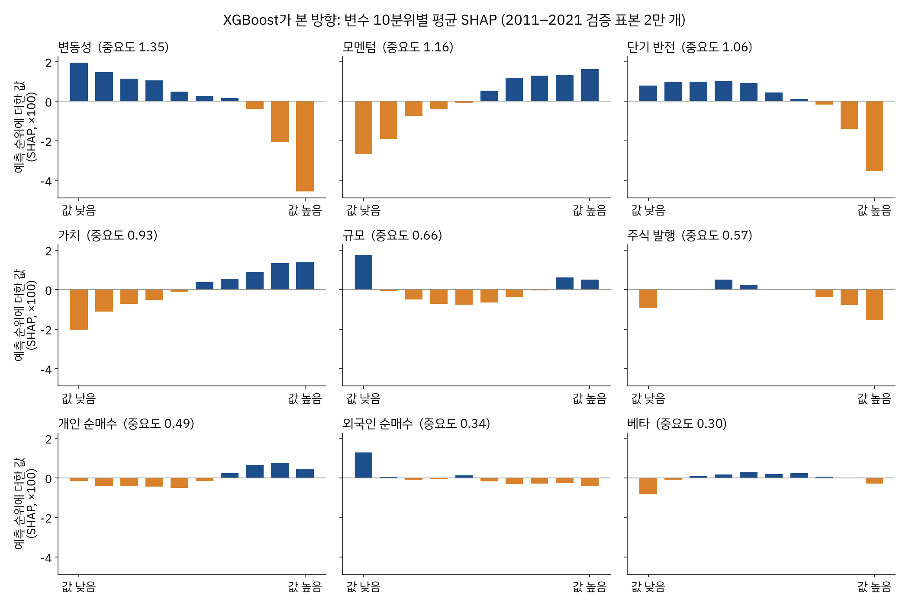
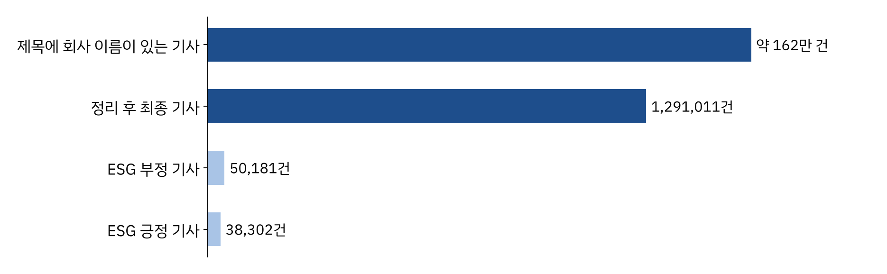
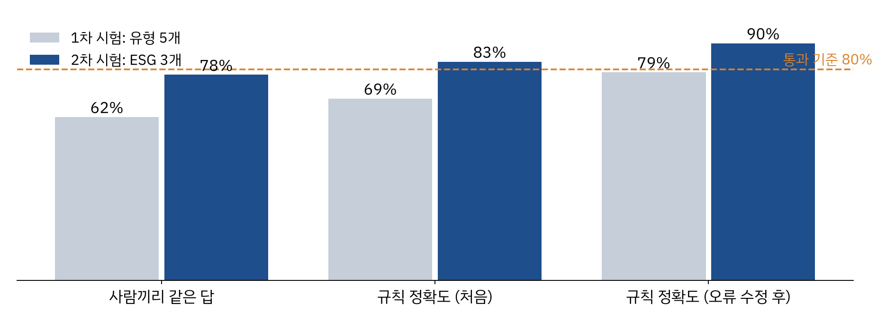
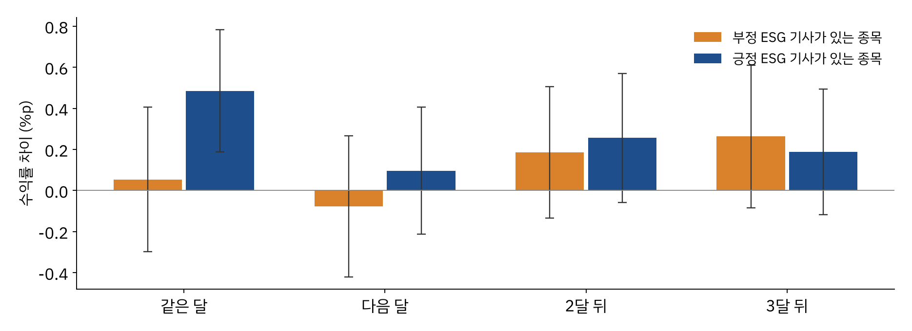

4팀 발표 해설서
발표 슬라이드 15장을 "왜?"가 더 안 나올 때까지 풀어 쓴 문서 · 정형 숫자는 모두 팀 데이터셋(예원님 final_structured_data_raw) 기준 · 11/18
읽는 법
- 1부 기초: 우리가 무엇을 맞히려는지, 쓰는 용어(IC, 5분위, t값, FM, XGBoost, SHAP …)를 먼저 잡는다. 이걸 읽고 나면 슬라이드의 숫자가 다 읽힌다.
- 2부 슬라이드별 해설: 장마다 ① 한 줄 요약 ② 왜 했나 ③ 어떻게 했나 ④ 결과 읽는 법 ⑤ 왜 이런 결과가 나왔나 ⑥ 예상 질문과 답.
- 3부 한 장 정리: 발표 직전에 볼 핵심 숫자와 답변.
1부. 기초: 이것만 알면 슬라이드가 다 읽힌다
1-1. 우리 프로젝트는 무엇을 맞히나
매달 말, 코스피 종목들의 "다음 달 수익률 순위"를 맞힌다. 예를 들어 1월 말에 지금 알 수 있는 정보(시총, 지난 수익률, 개인·외국인 매매 등)로 2월에 어떤 종목이 상대적으로 많이 오를지 줄을 세운다.
왜 수익률 자체가 아니라 '순위'인가? 시장 전체가 오르고 내리는 건 금리·경기 같은 거시 요인이라 종목 정보로는 못 맞힌다. 그래서 "같은 달 안에서 누가 더 잘하나"만 본다. 투자로 치면 잘할 종목은 사고 못할 종목은 피하는 것(롱숏)이라, 시장 방향과 상관없이 의미가 있다. 교수님이 11/16에 "금리·환율은 모든 종목에 같으니 순위 예측에 바로 못 쓴다"고 하신 것도 같은 이유다.
1-2. 데이터와 기간
| 항목 | 내용 | 왜 이렇게 |
|---|
| 정형 데이터 | 팀 데이터셋: 2000–2021 월별, 종목-월 약 18만 개. 수익률, 시총, PBR, 주식 수, 개인·외국인 순매수, 베타(24개월), 모멘텀, 변동성(12개월) | 팀 공식 데이터라 보고서·팀 코드와 숫자가 맞음 |
| 학습 | 2001년부터 그 전 해 11월까지 쌓아서 학습 → 다음 해 12개월 예측. 해마다 반복 | 그 시점에 알 수 있던 정보만 쓰려고 (미래 정보 차단) |
| 평가(검증) 기간 | 2011–2021, 131개월 | 모델이 처음 보는 기간에서만 점수를 매김 |
| 뉴스 | 빅카인즈, 언론사 5곳(매경·머투·서경·파뉴·한경), 해마다 시총 상위 200 종목, 2001–2021 | 3장 결과 ⑤ 참고 |
1-3. 9개 정형 변수: 무엇이고 왜 넣었나
| 변수 | 뜻 | 예상 | 왜 그렇게 예상했나 (금융 연구에서 알려진 설명) |
|---|
| 베타 | 시장이 1% 움직일 때 이 주식이 몇 % 움직이나 (24개월) | + | 시장 위험을 많이 지면 보상(수익률)도 커야 한다는 CAPM. 실제로는 잘 안 맞는 경우가 많음 |
| 규모 | 시가총액(log) | − | 작은 회사는 정보가 적고 거래가 어려워 투자자가 더 높은 수익률을 요구 → 소형주가 평균적으로 더 오름 |
| 가치 | 1/PBR (장부가 대비 싼 정도) | + | 싸게 평가된 주식이 제값으로 돌아오거나, 위험이 커서 보상을 받음 |
| 단기 반전 | 이번 달 수익률 | − | 한 달 동안 많이 오른 주식은 과하게 올라서 다음 달 조금 되돌아감 |
| 모멘텀 | 지난 12개월 수익률(최근 1개월 제외) | ±(통제) | 오르던 주식이 계속 오르는 추세 효과. 방향 가설 없이 다른 효과를 깨끗이 보려고 넣은 통제 변수 |
| 변동성 | 최근 12개월 수익률 흔들림 | − | 이론상 위험하면 더 벌어야 하지만, 실제로는 '대박 노리는' 매수가 몰려 고평가 → 이후 수익률이 낮다는 결과가 많음(저변동성 이상현상) |
| 주식 발행 | 12개월 주식 수 증가율 | − | 회사는 주가가 비쌀 때 주식을 찍어 판다 → 이후 수익률이 낮음 |
| 개인 순매수 (H1) | 개인 순매수 금액 / 시총 | − | 개인은 정보가 적고 오른 주식을 뒤쫓는 경향 → 개인이 많이 산 주식은 다음 달 약할 것 |
| 외국인 순매수 (H2) | 외국인 순매수 금액 / 시총 | + | 외국인은 정보·분석 능력이 좋아 → 외국인이 산 주식은 다음 달 강할 것 |
왜 4단계로 나눠 넣었나? 기준선(베타·규모·가치) → +통제(반전·모멘텀) → +보강(변동성·발행) → +수급(개인·외국인). 이미 잘 알려진 변수들을 먼저 넣어 두고, 우리가 보고 싶은 수급 변수가 그 위에 무엇을 더하는지만 따로 재려는 것이다. 처음부터 다 넣으면 수급의 효과가 다른 변수 덕인지 구분이 안 된다.
1-4. 용어 사전
| 용어 | 뜻 | 어떻게 읽나 |
|---|
| 순위(0~1) | 매달 종목들을 변수 크기로 줄 세워 0(가장 작음)~1(가장 큼)로 바꾼 값 | 달마다 시장 분위기가 달라도 비교 가능. 극단값 영향도 줄어듦 |
| 5분위, Q5−Q1 | 변수 크기로 종목을 5등분 → 상위 20%(Q5)와 하위 20%(Q1)의 다음 달 평균 수익률 차이 | +면 "클수록 다음 달 잘함". %p/월 단위 |
| IC | 매달 예측 순위와 실제 다음 달 수익률 순위의 상관(스피어만), 그 월평균 | 0이면 못 맞힘, 1이면 완벽. 주식에선 0.05면 쓸 만하고 0.09면 꽤 좋은 편 |
| t값 | 평균 ÷ (표준편차/√개월 수). "우연히 이렇게 나올 가능성"의 반대 지표 | |t|≥2면 우연이라 보기 어려움(약 5% 기준), ≥3이면 확실 |
| Fama-MacBeth (FM) | 매달 "다음 달 수익률 = 9개 변수의 직선 합" 회귀 → 131개 달의 계수를 평균 | 계수 부호 = 방향, t = 확실한 정도. 다른 변수를 다 고정했을 때 이 변수만의 효과 |
| XGBoost | 결정나무 300개를 이어 붙인 예측 모델 | 직선이 아닌 모양(예: 아주 작은 회사만 특별)과 변수끼리의 조합을 잡음. 대신 방향을 직접 말해 주지 않음 |
| 확장(누적) 학습 | 2001년부터 학습 직전까지 데이터를 계속 늘려가며 학습 | 반대는 롤링(최근 N년만) |
| 단계 판정 규칙 | 변수를 추가했을 때 ① 평균 IC가 오르고 ② 11년 중 6년 이상 오르면 OK | 평균만 보면 한두 해 우연에 흔들려서, 해마다 꾸준한지도 봄 |
| SHAP | XGBoost의 예측 하나를 "각 변수가 얼마씩 올리고 내렸나"로 나눈 값 | 트리 모델의 방향을 보는 도구 (교수님 F11) |
| 통제 변수 | 보고 싶은 효과를 다른 이유와 섞이지 않게 함께 넣는 변수 | "규모를 통제하면 사라진다" = 큰 회사라서 생긴 착시였다 |
2부. 슬라이드별 해설
1장 · 표지 / 2장 · 11/11 피드백 11가지
한 줄: 11/11에 받은 피드백을 정형 모델·뉴스·진행 방식 셋으로 나눠 정리.
왜 이 장이 필요한가? 이번 발표 전체가 "피드백을 어떻게 반영했나"의 답이라, 교수님이 무엇을 말씀하셨는지부터 다시 확인시켜 드려야 뒤의 결과가 왜 나오는지 연결된다.
| 번호 | 피드백 | 무슨 뜻이었나 |
|---|
| F1 | 모델 전에 먼저 찍어 본 것 (칭찬) | 5분위 그림으로 변수 방향부터 확인한 순서가 좋았다 |
| F2 | 기간·그룹 수를 바꿔도 같은가 | 11년 평균 한 장으로는 언제 생긴 효과인지 모른다 |
| F9 | 학습 기간을 줄여 보라 | 오래된 데이터가 오히려 방해일 수도 있다 |
| F11 | 트리 모델 방향은 SHAP으로 | XGBoost는 +/−를 말해 주지 않는다 |
| F3·F4·F5·F10 | 뉴스도 먼저 찍어라 / 단위 / 분류와 LLM 비용 / 종목별 기사 수 차이 | 뉴스를 모델에 넣기 전에 데이터와 방법부터 확인 |
| F6·F7·F8 | 오픈소스 LLM·GPU / 자원·시간 먼저 / 자동 수집 법적 문제 | 진행 방식 |
3장 · 피드백별로 한 일
한 줄: 피드백 하나하나에 대응하는 실행과 결과 장 번호를 짝지은 표.
Q. F8(자동 수집 법적 문제)은 어떻게 했나?
A. 빅카인즈 웹사이트의 내려받기 기능을 그대로 쓴 것이고, 이안님 매크로는 그 버튼 누르기를 자동으로 한 것이다. 기사 원문은 비공개 드라이브에만 두고 깃허브나 공개 채널에는 올리지 않았다.
Q. F6(오픈소스 LLM + GPU)은?
A. 분류는 LLM 대신 키워드 규칙으로 했다(비용 0, 결과를 사람이 확인 가능). 감성 점수는 무료 공개 모델 KR-FinBert-SC를 썼고, 코랩 GPU나 노트북 CPU로 돌렸다.
4장 · 결과 ① 변수마다 힘이 센 시기가 다르다 (F2)

읽는 법: 막대 하나 = 그 기간 동안 매달 (상위 20% 다음 달 수익률 − 하위 20% 다음 달 수익률)의 평균. 별표 = t 2 이상.
| 변수 | 2001–10 | 2011–15 | 2016–21 | 한 줄 |
|---|
| 규모 | −0.72 | −2.32* | −1.91* | 2011년 이후 소형주 효과가 강해짐 |
| 가치 | +2.16* | +0.59 | +1.26* | 꾸준히 +, 2011–15에 약함 |
| 모멘텀 | +1.28* | +1.43* | −0.75 | 2016년 이후 반대 방향(유의하진 않음) |
| 변동성 | −1.78* | −0.42 | −0.25 | 2010년 이전 효과 |
| 주식 발행 | −1.36* | −0.37 | −0.24 | 2010년 이전 효과 |
| 개인 순매수 | +0.13 | +0.68 | +0.71* | 가설과 반대(+)인 건 최근 현상 |
| 외국인 순매수 | −0.37 | −0.24 | −0.36 | 어느 기간도 유의하지 않음 |
왜 시기마다 다른가? 이런 효과는 시장에 알려지면 투자자들이 따라 하면서 약해지는 경우가 많다(가치·변동성·발행 효과가 2010년 이후 약해진 것). 반대로 규모 효과는 2010년대 대형주 쏠림(삼성전자 등) 속에서 소형주가 상대적으로 많이 오르내리며 오히려 커졌을 수 있다. 모멘텀은 시장이 급반전하는 시기(2018–2020 같은)에 크게 손해를 보는 걸로 알려져 있어 2016년 이후 뒤집힌 것과 맞는다. 그래서 특정 시기 하나만 학습하면 그 시기 효과에 끌려가고, 여러 시기를 다 본 모델이 덜 흔들린다 → 5장으로 이어짐.
Q. 개인 순매수가 +로 나오는 건 이상하지 않나? (H1은 −였는데)
A. 가설과 반대다. 해석은 두 가지다. ① 개인은 떨어진 주식을 사는 '역발상' 매매를 많이 해서, 개인 순매수가 많은 종목은 이번 달 많이 빠진 종목이고 다음 달 되돌아 오른다(단기 반전과 비슷한 효과). ② 개인이 급하게 팔려는 기관·외국인의 물량을 받아 주는 대가를 받는다. 미국에서도 개인 순매수 다음 달 수익률이 높다는 연구(Kaniel·Saar·Titman 2008)가 있다. 다만 2010년 이전엔 없고 최근에만 있다.
5장 · 결과 ② 오래된 데이터도 쓰는 편이 낫다 (F9)

| 평균 IC | 기준선 | +통제 | +보강 | +수급 |
|---|
| 확장 (2001년부터) | 0.050 | 0.077 | 0.089 | 0.091 |
| 최근 10년만 | 0.047 | 0.075 | 0.086 | 0.090 |
| 최근 7년만 | 0.047 | 0.070 | 0.082 | 0.088 |
| 최근 5년만 | 0.042 | 0.068 | 0.079 | 0.082 |
왜 했나? 2001–2005년 시장은 지금과 많이 달라서, 그때 데이터가 오히려 방해일 수 있다는 교수님 지적(F9). 어떻게? 같은 모델·같은 평가 기간에서 학습 기간만 바꿔 16번 학습. 왜 확장이 이기나? ① 데이터가 많을수록 나무 모델이 우연한 패턴에 덜 속는다. ② 4장처럼 효과가 시기마다 켜졌다 꺼지는데, 최근 5년만 보면 그 5년의 유행에 맞춰져 다음 해가 달라지면 틀린다. 결론: 지금 방식 유지. 단계별 IC가 오르는 순서도 모든 방식에서 같아서, 판정이 학습 기간 선택에 흔들리지 않는다.
Q. 10년만 쓴 것과 거의 같은데(0.090 vs 0.091) 의미 있는 차이인가?
A. 10년과는 거의 같다. 하지만 7년·5년으로 줄이면 확실히 떨어지고, 확장이 어느 단계에서도 지지 않았다. "오래된 데이터를 빼서 좋아지는 건 없다"가 결론이다.
6장 · 결과 ③ XGBoost와 FM의 방향이 같다 (F11)

왜 했나? XGBoost는 예측은 잘해도 "변수가 클수록 오르나 내리나"를 말해 주지 않는다. 방향을 모르면 가설(H1, H2)을 판정할 수 없다. 어떻게? 마지막 해 모델로 검증 기간 2만 개 종목-월의 SHAP을 계산 → 변수 값 10등분별 평균 SHAP을 그림. 읽는 법: 막대가 위(파란색)면 그 구간의 값이 예측 순위를 올렸다는 뜻. 왼쪽(값 작음)에서 오른쪽(값 큼)으로 갈수록 내려가면 "클수록 불리".
| 변수 | 중요도 순위 | SHAP 방향 | FM 계수 (t) |
|---|
| 변동성 | 1 | − | −0.86 (−2.1) |
| 모멘텀 | 2 | + | +1.19 (2.8) |
| 단기 반전 | 3 | − | −0.02 (−0.1) |
| 가치 | 4 | + | +0.19 (0.5) |
| 규모 | 5 | − | −2.55 (−6.0) |
| 주식 발행 | 6 | − | −0.52 (−1.7) |
| 개인 순매수 | 7 | + | +0.77 (3.2) |
| 외국인 순매수 | 8 | − | −0.23 (−1.2) |
| 베타 | 9 | + | +0.41 (1.5) |
왜 방향이 같다는 게 중요한가? 두 모델은 방식이 완전히 다르다(직선 회귀 vs 나무). 둘이 같은 방향을 가리키면 그 효과는 특정 모델의 착시가 아니라 데이터에 있는 것이다. 규모는 왜 SHAP 방향이 약한데 FM은 가장 강한가? 그림을 보면 규모는 가장 작은 10%에서만 예측을 크게 올리고 나머지는 평평하다. 직선(FM)은 이 끝 부분 때문에 전체 기울기를 크게 잡고, SHAP 방향(전체 상관)은 대부분 평평한 구간 때문에 작게 나온다. 즉 소형주 효과는 "아주 작은 회사"에 몰려 있다.
Q. 중요도 1위가 변동성인데 FM에선 규모가 가장 강하다. 모순 아닌가?
A. 다른 걸 잰다. 중요도(평균 |SHAP|)는 "예측을 얼마나 많이 움직였나", FM t는 "직선 기울기가 얼마나 확실한가". 변동성은 전 구간에서 고르게 예측을 움직여 중요도가 높고, 규모는 끝 부분만 크게 움직여 직선 기울기는 크지만 평균 영향은 작다.
7장 · 결과 ④ XGBoost가 11년 중 9년 더 잘 맞혔다

왜 했나? "복잡한 모델이 꼭 필요한가?"를 확인하려고(팀 제안). 어떻게? FM은 매년 1월까지의 월별 계수 평균으로 그해를 예측 → XGBoost와 같은 조건(미래 정보 없음, 같은 변수)으로 맞춤. 결과: FM 0.077(t 9.3), XGBoost 0.091(t 10.6), 차이 +0.014(t 1.6), XGBoost가 9/11년 앞섬, 두 예측의 종목 순위 상관 0.60.
어떻게 해석하나? ① 직선만으로도 IC의 85%가 나온다 → 예측력의 대부분은 변수 자체에서 온다. ② 차이가 t 2를 못 넘으니 "확실히 낫다"고는 못 하지만, 9/11년이나 앞서서 꾸준한 편이다. ③ 더한 부분은 규모처럼 직선이 아닌 모양을 잡은 덕으로 본다.
Q. t 1.6이면 그냥 같은 거 아닌가? 왜 XGBoost를 쓰나?
A. 평균 차이만 보면 유의하지 않다. 그래도 11년 중 9년 앞섰고, 직선이 아닌 효과(소형주 끝단)를 잡는 장점이 있어 최종 모델로 쓴다. 방향 해석은 FM과 SHAP으로 같이 확인해서 보완한다.
8장 · 결과 ⑤ 뉴스 데이터 만들기 (F4, F10)

F4 "회사 단위냐 시장 단위냐"의 답: 회사 단위. 시장 전체 분위기는 모든 종목에 같은 값이라 순위 예측에 쓸모가 없다(1-1과 같은 이유). 그래서 기사 제목에 회사 이름이 있는 기사만 그 회사에 붙였다. 본문에만 잠깐 나온 회사는 그 기사의 주인공이 아니다.
F10 "종목마다 기사 수가 다르다"의 답: 상위 200만. 작은 회사는 기사가 거의 없어 "기사 없음"이 정보가 없는 건지 소식이 없는 건지 구분이 안 된다. 그래서 해마다 시총 상위 200 종목으로 제한했다.
| 고친 문제 | 왜 문제였나 | 결과 |
|---|
| 같은 이름을 쓰는 회사 31개 | 'SK'는 2015-07까지 옛 SK(003600), 이후 SK C&C가 이름을 바꾼 SK(034730). 날짜를 안 보면 둘 다 붙거나 둘 다 버려짐 | 이름마다 쓴 기간표를 만들어 날짜로 주인 결정 → 버려지던 4,719건 복구 |
| 옛 이름 기사 | 유수홀딩스는 2001–08년에 '한진해운'. 지금 이름으로 검색하면 0건 → "기사 없음"으로 잘못 계산 | 옛 이름으로 두 번 재수집 → 기사 0건 종목-연도 108 → 42 |
| 잘못 붙는 기사 | 'SK텔'(SK텔레콤)이 SK에, '…목표가↑-대우'(리포트를 쓴 증권사)가 대우에, '광고대상'이 '대상'에 붙음 | 이름 앞뒤 글자, 리포트 꼬리표, 일반 단어 이름을 걸러내는 규칙 → 16.6% 제거 |
9장 · 결과 ⑥ 감성 점수는 2015년까지 다음 달도 맞혔고, 2016년부터는 못 맞힌다 (F3)

감성 점수란? 금융 뉴스로 학습된 공개 모델 KR-FinBert-SC에 제목과 본문 앞 200자를 넣어 나온 (긍정 확률 − 부정 확률)이다. −1~+1 사이 값이고, 회사×월로 평균했다. 그달 마지막 거래일 당일이나 그 뒤에 나온 기사는 다음 달로 넘겼다. 그 기사를 보고 그달 말에 투자할 수는 없으니까.
왜 두 번 쟀나? 처음에는 전체 정리본이 686MB라 바로 다룰 수 없어서, 일부 파일 52개(파일럿)로 먼저 찍었다. 그때는 같은 달 IC 0.121, 다음 달 0.002였다. 11/18에 129만 건 전체에 점수를 매겨(코랩 GPU) 다시 쟀고, 결과가 달라서 슬라이드를 전체 데이터 기준으로 바꿨다.
| 확인한 것 (전체 논조) | 결과 | 뜻 |
|---|
| 같은 달 IC (2001–21) | 0.180 (t 28.0) | 점수가 기사를 제대로 읽음 |
| 다음 달 IC (2001–21) | 0.018 (t 2.6) | 21년 전체로는 약하게 맞힘 |
| 다음 달 IC (2011–21, 모델 평가 기간) | 0.001 (t 0.1) | 평가 기간에는 0 |
| 다음 달 5분위 Q5−Q1 | 2001–10 +1.16%p (t 3.3) / 2011–15 +1.07%p (t 2.5) / 2016–21 −0.50%p (t −1.4) | 2016년에 끊김 |
| FM 통제 9개 포함 | 2002–10 +1.07 (t 2.9) / 2011–15 +0.97 (t 3.0) / 2016–21 −0.13 (t −0.4) | 다른 변수 효과가 아님. 2015년까지만 |
| 주가 보도 기사 뺀 논조 FM | 2002–10 t 2.2 / 2011–15 t 3.0 / 2016–21 t 0.0 | 주가 기사 때문이 아님 |
| XGBoost 3단계 → +감성 (2011–21) | IC 0.0207 → 0.0231, +0.0024 (t 0.6), 8/11년 | 조금 오르지만 유의하지 않음 |
왜 파일럿과 결과가 다른가? 파일럿 52개 파일은 회사·연도를 고르게 덮지 못했다. 다음 달 효과는 한 달에 1%p 정도로 작아서, 표본이 적고 치우치면 묻힌다. 같은 달 효과(0.12~0.18)처럼 큰 효과는 파일럿에서도 보였다. 기사 수 효과가 파일럿에서만 보이고 전체에서 사라진 것과 같은 이유다. 그래서 슬라이드는 전체 데이터 숫자로 바꿨다.
왜 2015년까지는 다음 달까지 맞혔나? (해석) 좋은 기사가 나오면 그달에 주가가 크게 오르지만(같은 달 Q5−Q1 +5.3%p), 다 반영되지 않고 다음 달에 조금 더 오르는 '느린 반영'이 있었다는 뜻이다. 투자자 관심이 한정돼 있어서 뉴스가 천천히 퍼진다는 연구들(예: 기사 논조가 다음 날 이후 수익률을 예측한다는 Tetlock 2007)과 같은 방향이다.
왜 2016년부터 사라졌나? (해석, 우리 데이터로 원인을 증명한 건 아님) 온라인·모바일 뉴스, 증권사 실시간 알림, 알고리즘 매매가 늘면서 대형주 뉴스가 더 빨리 반영된다고 보는 게 자연스럽다. 4장의 가치·변동성·발행 효과처럼, 알려진 패턴이 시간이 지나며 약해지는 흐름과도 같다.
왜 XGBoost에 넣어도 거의 안 오르나? 평가 기간 2011–21 중 앞 5년은 효과가 있고 뒤 6년은 없거나 반대라서, 합치면 0에 가깝다. 모델은 2015년까지의 효과를 배워서 2016년 이후에 적용하니 맞지 않는다.
Q. 그럼 뉴스가 예측력이 있다는 건가, 없다는 건가?
A. "있었는데 사라졌다"다. 2001–2015년에는 통제 변수를 넣어도 한 달 1%p 정도(t 3 안팎)로 있었지만, 2016년부터는 0이다. 지금 모델을 쓴다면 예측력이 없다고 보는 게 맞다.
Q. 2016년에 끊긴 건 우연 아닌가? 기간을 일부러 그렇게 자른 것 아닌가?
A. 기간은 4장 정형 변수와 똑같이 미리 정한 구간(2001–10, 2011–15, 2016–21)을 그대로 썼다. 뉴스를 보고 고른 경계가 아니다.
Q. 파일럿에서 '기사 수가 많으면 다음 달 약하다'(t −3.1)는 왜 슬라이드에 없나?
A. 전체 데이터로 다시 보니 사라졌다(전체 감성 데이터에서도 기사 수 IC 0.009, t 1.3). 파일럿 표본의 편향이었다.
화제형은? 파일럿에서 화제형(신제품·진출·제휴) 기사 논조는 같은 달에도 약했다(0.042). 거의 다 긍정이라 종목끼리 점수 차이가 안 나기 때문이다. 유형 분류 자체가 10장처럼 기준을 못 넘어서, 전체 데이터에서는 유형별로 나누지 않았다.
10장 · 결과 ⑦ 유형 5개는 사람끼리도 62%만 같았다 (F5)
왜 유형을 나눴었나? H3는 "화제형 기사 논조"였다. 공시형(실적·배당)은 공시로 바로 알려져 즉시 반영되고, 광고·시황 기사는 정보가 아니니 빼고, 숫자 없이 나오는 새 사업 소식(화제형)만 늦게 반영될 여지가 있다고 봤기 때문.
왜 LLM이 아니라 키워드 규칙? 교수님 F5(비용). 수십만 건을 유료 API로 분류하면 비용이 크고, 키워드 규칙은 무료이고 왜 그렇게 분류됐는지 사람이 확인할 수 있다.
검증 방법: 기간 4구간에서 고르게 100건 → 두 사람(예원·아영)이 서로 안 보고 정답 → 컴퓨터 규칙과 비교. 통과 기준은 사람 정답 대비 80%.
| 지표 | 값 | 뜻 |
|---|
| 사람끼리 같은 답 | 62% (카파 0.47) | 카파는 우연히 같을 확률을 뺀 일치도. 0.4~0.6은 '보통' |
| 규칙 정확도 | 69% | 기준 80% 미달 |
| 화제형이라 한 것 중 진짜 화제형 | 44% | H3의 핵심 유형을 잘 못 고름 |
왜 실패했나? 사람끼리도 62%면 정의가 애매한 것이다. 'ELS 출시'는 홍보(광고)인가 새 사업(화제)인가, '목표가 상향'은 실적(공시)인가 전망(기타)인가. 규칙을 아무리 고쳐도 사람 정답이 흔들리면 80%를 넘을 수 없다. 오류를 고쳐 79%까지 갔지만 같은 100건으로 다시 잰 값이라 참고용이다(같은 시험지로 공부하고 같은 시험을 다시 본 셈).
11장 · 11/16 피드백: ESG로 좁히기
강의 요지: 금리 변화 중 시장이 예상하지 못한 부분만 주가를 움직인다(버냉키·커트너 2005). 금리·환율처럼 모든 종목에 같은 지표는 종목별 민감도(베타)나 경로 변수(부채비율, 수출 비중)로 바꿔야 순위 예측에 쓸 수 있다.
우리 팀에게: 라벨링 기준을 고치고 다시 재는 걸 반복해도 끝나지 않는다. 뉴스에 성격이 다른 정보가 너무 섞여 있으니 ESG로 좁혀라. 부정(수사·사고·파업·산재·갑질) vs 긍정(사회공헌·기부·친환경)은 좋다/나쁘다가 거의 자명해서 데이터화가 쉽다.
| 새 가설 | 왜 이렇게 세웠나 |
|---|
| H3' | ESG 부정 기사가 나온 종목은 다음 달(3달 뒤까지) 수익률이 낮다 | 사건·사고는 피해 규모를 바로 알기 어려워 늦게 반영될 수 있다 |
| H4' | (a) 부정 기사가 나온 달에 홍보 기사도 있으면 덜 떨어진다 (b) 부정 기사 종목을 개인이 많이 사면 더 약하다 | (a) 교수님이 말씀하신 '나쁜 일은 좋은 뉴스로 덮는다'는 연구 흐름 (b) 원래 H4(설거지)를 ESG로 옮김 |
판정 기준은 결과를 보기 전에 정했다: 있음−없음 차이 t ≤ −2, 또는 통제 9개를 넣은 FM에서 t ≥ 2(방향 맞게), 또는 XGBoost에 넣었을 때 IC 증가. 왜 미리? 결과를 보고 기준을 고르면 우연한 결과도 유의하게 만들 수 있어서.
12장 · 결과 ⑧ 범위를 좁히자 기준 80%를 넘었다

규칙을 만든 순서: 부정 81개·긍정 48개 키워드를 환경(E)·사회(S)·지배구조(G)로 정리 → 일부 데이터에 돌려 부정·긍정으로 나온 기사 30건씩 직접 읽기 → 틀린 걸 고치기 반복.
판정 순서: ① 주가·투자 기사 → 무관 ② 스포츠·대회 → 무관 ③ 회사에 유리한 판결(승소·무죄) → 무관 ④ 재난 성금 → 긍정 ⑤ 부정 키워드 → 부정 ⑥ 긍정 키워드 → 긍정 ⑦ 나머지 → 무관. 왜 순서? 처음 걸리는 데서 멈추게 해 답이 하나로만 나오게. 왜 부정을 긍정보다 먼저? 사건이 있는 기사는 사건이 핵심이라서.
왜 제목만 보나? 본문까지 보면 농구 기사 본문의 '과로', 실적 기사 본문의 '기부' 같은 엉뚱한 기사가 걸렸다. 아영님 정답 기준으로 제목만 82% vs 제목+본문 77%.
| 지표 | 값 |
|---|
| 사람끼리 같은 답 | 78% (카파 0.67) |
| 처음 규칙 정확도 (통과 판단에 쓴 값) | 83% |
| 단어 속 오류 수정 후 (같은 기사로 다시 잰 참고용) | 90% |
| 부정이라 한 것 중 진짜 부정 / 긍정이라 한 것 중 진짜 긍정 | 85% / 97% |
| 부정과 긍정을 바꿔 단 경우 | 0건 |
Q. 100건을 왜 무작위로 안 뽑고 부정 35·긍정 35·무관 30으로 맞췄나?
A. 무작위로 뽑으면 ESG 기사가 100건 중 6건쯤밖에 안 나와서 "부정이라 한 것 중 몇 %가 맞나"를 잴 수가 없다. 그래서 규칙 답 기준으로 섞어 뽑았다. 대신 90%는 "전체 기사의 90%를 맞힌다"는 뜻은 아니다.
Q. 갈린 22건은 어떻게 정했나?
A. 팀 기준 5줄로 영섭이 최종 결정했다: 스포츠·문화 후원은 무관(마케팅), 진행 중인 수사·소송도 부정, 제품 이름 속 단어('내화건자재'의 화재)는 무관, 직원 개인 인터뷰는 무관, 제품 수상은 무관.
13장 · 결과 ⑨ ESG 기사도 다음 달 수익률은 못 맞힌다

읽는 법: 막대 = 매달 (그 달 ESG 기사가 있는 종목의 수익률 − 없는 종목의 수익률)의 평균. 세로선 = ±2 표준오차. 세로선이 0을 넘으면(0을 포함하면) 유의하지 않다. 표본: 상위 200 종목 중 그해 기사가 있는 약 4만 9천 종목-월.
| 확인한 것 | 결과 | 판정 |
|---|
| 부정 기사 있는 종목, 다음 달 | −0.08%p (t −0.5) | 차이 없음 |
| 부정 기사, 같은 달 | +0.05%p (t 0.3) | 같은 달도 반응 없음 |
| 긍정 기사, 같은 달 / 다음 달 | +0.49%p (t 3.3) / +0.10%p (t 0.6) | 같은 달만 |
| FM (통제 9개 + 부정·긍정) | 부정 t 0.0, 긍정 t 0.4 | 사라짐 |
| XGBoost 3단계 → +ESG | IC 0.021 → 0.016 (t −1.8) | 오히려 낮아짐 |
| H4'(a) 덮기 / (b) 개인 매수 | +0.03%p (t 0.1) / −0.20%p (t −0.7) | 유의하지 않음 |
왜 부정 ESG에 반응이 없나? ① 대형주의 사건 대부분은 회사 규모에 비해 작다(과징금 몇억, 지점 사고). ② 큰 사건은 이미 그달 기사가 쏟아져 그달에 반영된다. ③ 제목 키워드로는 사건의 크기를 구분 못 해서 작은 사건과 큰 사건이 섞인다.
왜 긍정 ESG는 같은 달에만 높나? 실적이 좋고 주가가 오를 때 회사가 기부·홍보를 늘리는 경향(주가 → 홍보 순서), 그리고 큰 회사일수록 홍보 기사가 많다. 그래서 규모 등 통제 변수를 넣으면 사라진다.
왜 XGBoost IC가 더 낮아졌나? 쓸모없는 변수를 넣으면 나무가 그 변수로 우연한 패턴을 학습해 오히려 예측이 나빠질 수 있다(과적합).
Q. 2~3달 뒤 막대가 +인데(부정 +0.25 등) 의미 있나?
A. 세로선이 0을 포함하고 t가 1.2~1.6이라 유의하지 않다. 방향도 가설(−)과 반대다.
14장 · 결론
정형: 기간을 나눠도(F2), 학습 기간을 바꿔도(F9) 단계별 판정은 같았다. SHAP 방향이 FM과 같아(F11) 결과가 모델 착시가 아니다. XGBoost가 FM보다 IC 0.014 높고 9/11년 앞섰다.
뉴스: 기사 논조는 2015년까지 다음 달 수익률을 예측했지만(FM t 3 안팎) 2016년부터 사라졌다. ESG(H3')는 어느 기간에도 예측하지 못했다. 같은 달 관계는 뚜렷하다 → 최근에는 대형주 뉴스가 나온 달 안에 가격에 반영된다.
왜 이 결론이 의미 있나? "효과가 (지금은) 없다"도 결과다. 그것도 감성 점수가 기사를 제대로 읽는다는 확인(같은 달 t 28)과, 분류 규칙이 기준을 넘었다는 확인(83%)을 거친 뒤의 "없다"라서, 방법이 나빠서 못 찾은 게 아니라고 말할 수 있다. 교수님 강의 내용과도 같다.
15장 · 앞으로의 방향
| 항목 | 내용 | 왜 |
|---|
| 정형 모델 확정 | 9개 변수 + XGBoost + 확장 학습. H1(반대 방향), H2(효과 없음)는 결과 그대로 기록 | 모든 확인에서 판정이 흔들리지 않음 |
| 뉴스 정리 | "2015년까지 있던 예측력이 2016년부터 사라짐"을 근거와 함께. 매칭 규칙·ESG 규칙은 재사용 자산 | 방법 검증을 거친 결과라 정리할 가치가 있음 |
| 여쭐 것 | 소형주로 넓히기 / 보도가 몰린 큰 사건만 보기 / 금리·환율 종목별 민감도 | 대형주는 반영이 빠르니 느린 곳(소형주), 큰 사건, 강의에서 제안하신 방법 |
| 최종 보고서 | 시행착오, 통과 기준, 파일럿 방법, 규칙 수정 이력 | 재현 가능하게 |
3부. 발표 직전에 볼 한 장 정리
| 숫자 | 한 줄로 말하기 |
|---|
| IC 0.050 → 0.077 → 0.089 → 0.091 | 변수를 단계별로 더할 때마다 예측력이 올랐다 (수급은 +0.002로 작고, 개인만 넣으면 t 2.0) |
| 확장 0.091 vs 5년 0.082 | 오래된 데이터를 빼서 좋아지는 건 없었다 |
| SHAP 9/9 일치 | 나무 모델과 직선 모델이 같은 방향을 가리켰다 |
| FM 0.077 vs XGB 0.091, 9/11년 | 복잡한 모델이 꾸준히 조금 낫다 (차이 t 1.6) |
| 개인 순매수 FM t +3.2 | H1과 반대: 개인이 산 종목이 다음 달 더 올랐다 (2011년 이후 현상) |
| 외국인 순매수 FM t −1.2 | H2: 효과 없음 |
| 감성 IC 같은 달 0.180 / 다음 달 0.018 (2011–21은 0.001) | 점수는 맞게 읽는다. 다음 달 예측력은 2015년까지 있었고 2016년부터 사라졌다 |
| 분류 62% → ESG 78%·83% | 정의를 좁히자 사람도 규칙도 기준을 넘었다 |
| 부정 ESG 다음 달 −0.08%p (t −0.5) | ESG도 다음 달은 못 맞힌다 |
가장 많이 나올 질문 3개
- "효과가 없으면 뉴스는 왜 했나?" → 전체 129만 건으로 재 보니 기사 논조는 2015년까지 다음 달을 예측했고(FM t 3 안팎) 2016년부터 사라졌다. 최근에는 뉴스가 그달에 반영된다는 건 강의 내용과 같은 결론이고, 다음은 반영이 느린 소형주나 큰 사건을 볼 수 있다.
- "개인 순매수는 왜 반대로 나왔나?" → 개인은 떨어진 주식을 사는 역발상 매매가 많고, 급하게 파는 물량을 받아 주는 대가를 받는다는 해석. 미국 연구(Kaniel·Saar·Titman 2008)에도 비슷한 결과가 있다. 2011년 이후 현상이다.
- "90%는 믿을 수 있나?" → 통과 판단은 처음 값 83%로 했다. 90%는 같은 기사로 다시 잰 참고용이라 따로 표시했다.
근거 파일: 깃 claude/gracious-fermat-5vr5w2 브랜치 연습장/out_yw(정형·ESG, 팀 데이터셋 기준), 연습장/out/news_pilot(파일럿), 연습장/news(규칙 코드). 연습장/out은 내 변수 정의(베타 60개월, 고유변동성) 기준의 강건성 확인 결과로 결론이 같다.